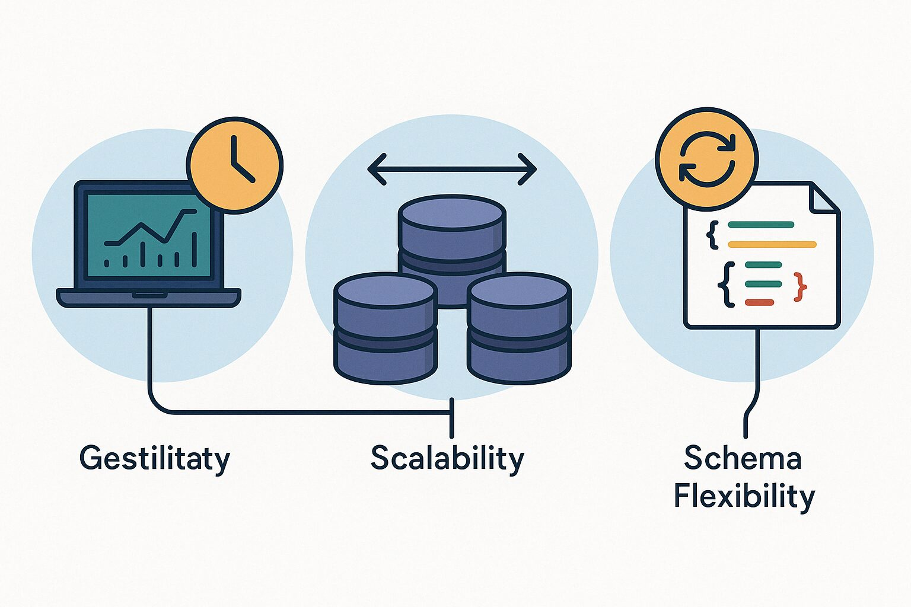

-
Integridad
Aseguran que los datos sean correctos, consistentes y fiables. Se establecen reglas para evitar información errónea.
-
Seguridad
Protegen la información contra accesos no autorizados a través de sistemas de permisos y autenticación de usuarios.
-
Concurrencia
Permiten que múltiples usuarios puedan consultar y modificar los datos al mismo tiempo de forma controlada, sin generar conflictos.
-
Respaldo y Recuperación
Cuentan con mecanismos para crear copias de seguridad y restaurar los datos en caso de fallos o pérdidas.
-
Abstracción de Datos
Ocultan los detalles complejos de cómo y dónde se almacenan físicamente los datos, presentando a los usuarios una vista simplificada.
